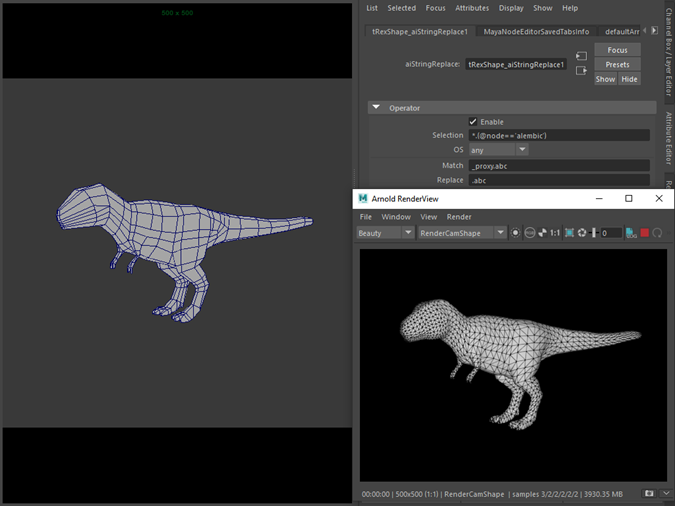

在加载 ASS 文件或 ABC 文件之前，可以使用运算符更新文件路径，然后使用另一个运算符替换该程序加载的几何体。例如，假设在渲染时，您想将“trex_proxy.abc”替换为“trex.abc”。使用 string_replace 运算符可以轻松完成此操作：
要下载场景和 .abc 文件，请单击此处。

*.(@node=='alembic') 选择所有 Alembic 程序节点Match 匹配以“_proxy.abc”结尾的任何文件名Replace 将“_proxy.abc”替换为“.abc”所有这些操作都在加载 .abc 文件之前完成。我们可以在 Arnold 日志（调试详细级别）中看到此内容。首先，应用 string_replace 运算符；然后在加载 .abc 文件后，将 set_parameter 运算符应用于从 .abc 文件加载的节点。